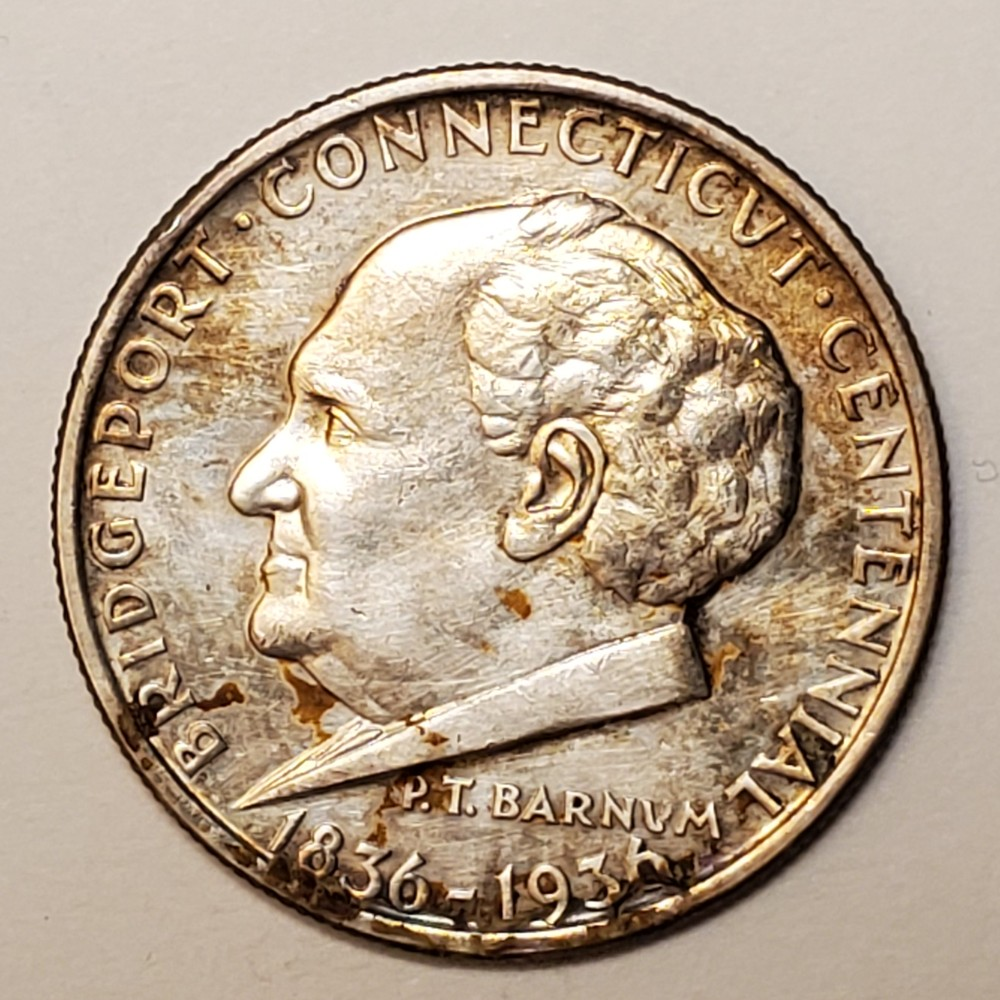
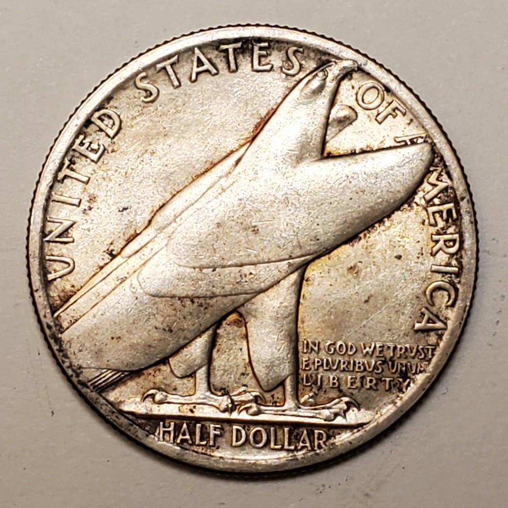
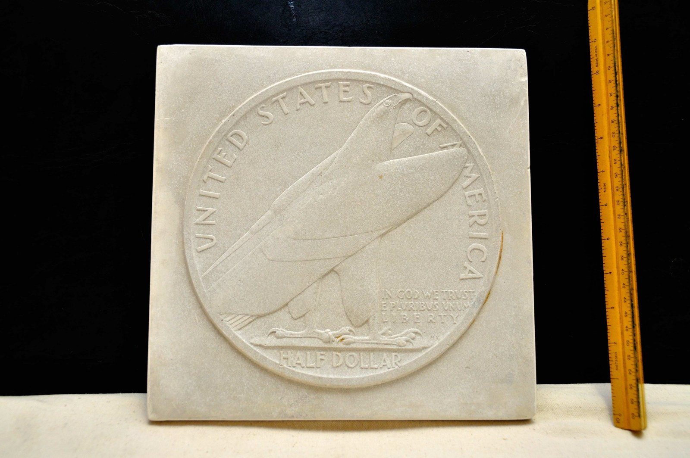
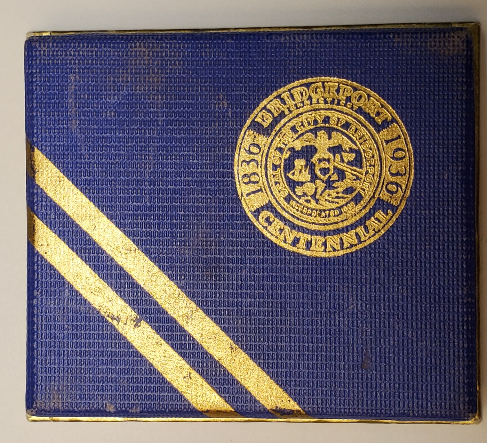
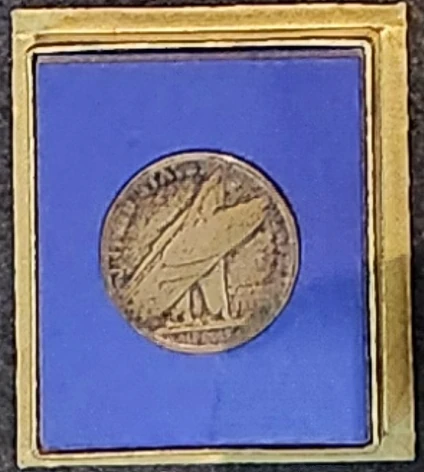

Commemorative half dollar · 1936
Bridgeport
Centennial
Designed by Henry Kreis for the centennial of Bridgeport's incorporation, the half dollar pairs a portrait of P. T. Barnum with a sharply simplified, modern eagle.
- Designer
- Henry Kreis
- Mint
- Philadelphia
- Mintage
- 25,015
- Original price
- $2
The issued coin
Portrait and emblem


Issued-coin photographs from the Kreis family collection.
Design and meaning
A local figure and a modern national symbol
The coin marked 100 years since Bridgeport's incorporation in 1836. Kreis placed P. T. Barnum, the showman, civic promoter, and former mayor of Bridgeport, on the obverse.
The reverse moves away from portrait realism. Its eagle is built from broad, overlapping shapes that emphasize silhouette and motion while leaving room for the denomination and required inscriptions.
From model to coin
The reverse plaster
The enlarged model shows how Kreis resolved the eagle's layered planes, lettering, and relationship to the circular field before reduction to coin size.

Photograph from the Kreis family collection.
Surviving presentation material
The original issue box
The blue-and-gold box carries the Bridgeport Centennial seal. A fitted blue interior presents the coin with its reverse visible.


Photographs from the Kreis family collection.
Issue and distribution
A centennial commemorative
The Philadelphia Mint struck 25,015 coins. The total includes 15 pieces reserved for annual assay, leaving the authorized 25,000 for distribution.
Bridgeport Centennial, Inc. offered the coins at an original issue price of two dollars.
Specifications
Coin details
- Year
- 1936
- Denomination
- Half dollar
- Composition
- 90% silver, 10% copper
- Weight
- 12.5 grams
- Diameter
- 30.6 mm
- Edge
- Reeded
- Mint
- Philadelphia, no mint mark
- Mintage
- 25,015
Research sources
Further reading
- United States Mint: Bridgeport, Connecticut, Centennial Half Dollar
- Kreis family photographs and collection documentation.